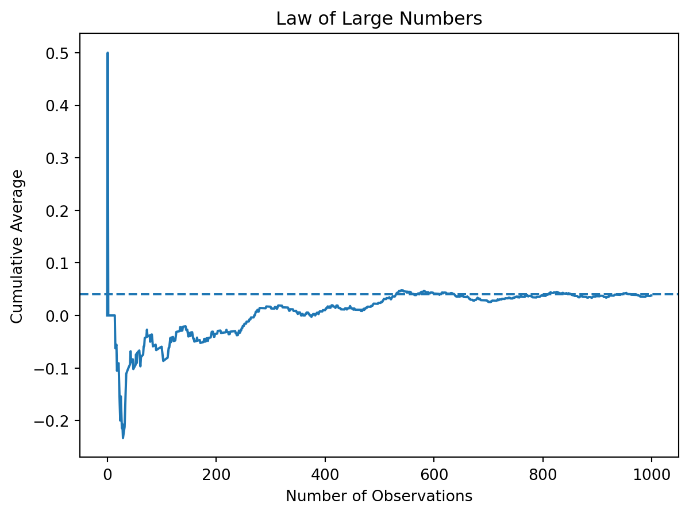
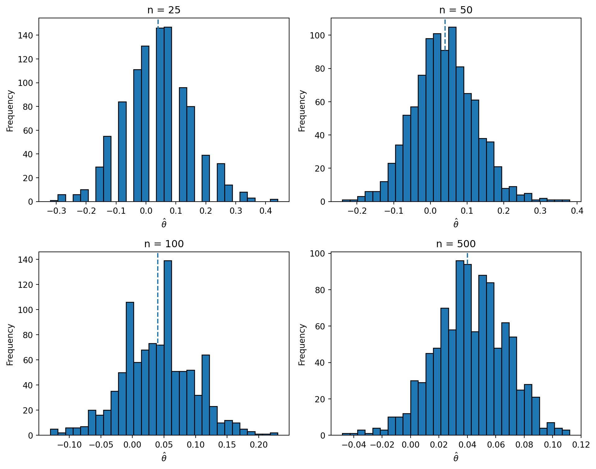

import numpy as np
np.random.seed(42)
n = 1000
pi_A = 0.22
pi_B = 0.18
A = np.random.binomial(1, pi_A, n)
B = np.random.binomial(1, pi_B, n)
# difference in sample means
theta_hat = A.mean() - B.mean()
theta_hatnp.float64(0.038000000000000006)Simulating Key Ideas from Classical Frequentist Statistics
Junzhe Zhao
April 21, 2026
Suppose I run a personal website with a landing page that invites visitors to sign up for my newsletter. I want to understand which wording of my call to action (CTA) is more effective at encouraging users to subscribe.
To test this, I consider two versions of the CTA. Version A might say “Sign up for our newsletter here!” while Version B says “Stay up to date by signing up!” While both aim to achieve the same goal, small differences in wording can influence user behavior.
To determine which version performs better, I run an A/B test. In an A/B test, visitors are randomly assigned to see one of the two versions, and I compare the outcomes between the groups. In this case, the outcome is whether a visitor signs up for the newsletter. By comparing the sign-up rates across the two groups, I can estimate which CTA is more effective and use statistical tools to evaluate whether the observed difference is meaningful.
We can model each visitor’s behavior as a random variable. Each visitor either signs up for the newsletter or does not, so their outcome can be represented as a Bernoulli random variable. Let \(\pi\) denote the probability that a visitor signs up.
Because the CTA shown to a visitor may affect their behavior, we allow this probability to differ across the two groups. Let \(\pi_A\) be the probability that a visitor signs up after seeing CTA A, and let \(\pi_B\) be the probability for visitors who see CTA B.
The quantity we are interested in is the difference in sign-up rates between the two CTAs, which we define as
\[ \theta = \pi_A - \pi_B. \]
To estimate this quantity, we use the difference in sample proportions:
\[ \hat{\theta} = \bar{X}_A - \bar{X}_B. \]
Since each observation is either 0 or 1, the sample mean in each group is simply the proportion of users who signed up. This makes the difference in sample means a natural and intuitive estimator for the effect of the CTA on sign-up behavior.
In practice, we would not know the true sign-up probabilities for each CTA. However, for the purpose of this exercise, we set them ourselves so that we can study how our estimator behaves when the true values are known.
Suppose the probability of signing up is \(\pi_A = 0.22\) for CTA A and \(\pi_B = 0.18\) for CTA B. The true difference in sign-up rates is therefore
\[ \theta = 0.22 - 0.18 = 0.04. \]
We simulate data by generating 1,000 observations for each group, where each observation is a Bernoulli draw that takes the value 1 if the user signs up and 0 otherwise.
np.float64(0.038000000000000006)The simulated estimate of \(\hat{\theta}\) is close to the true value of 0.04, although it is not exactly equal due to random sampling variation. This reflects the fact that with finite samples, our estimate will fluctuate around the true parameter. In the following sections, we explore how this variability behaves and how to quantify it.
The Law of Large Numbers states that as the sample size increases, the sample average converges to the true population mean. In the context of this A/B test, this means that our estimator \(\hat{\theta} = \bar{X}_A - \bar{X}_B\) should get closer to the true value \(\theta = 0.04\) as we collect more data.
To illustrate this, we compute the difference between the outcomes in groups A and B for each observation and then calculate the cumulative average of these differences as the sample size increases.

The plot shows that when the sample size is small, the estimate fluctuates substantially. However, as the number of observations increases, the cumulative average stabilizes and converges toward the true difference of 0.04. This demonstrates the Law of Large Numbers in action and gives us confidence that with enough data, our estimator will be close to the true value.
Now that we have an estimate of the difference in sign-up rates, the next question is how precise that estimate is. A point estimate alone does not tell us how much uncertainty there is, so we also want a standard error and a confidence interval.
One useful way to estimate uncertainty is the bootstrap. The bootstrap is a resampling method: we repeatedly sample with replacement from the observed data, recompute the statistic of interest on each resample, and use the variation across those resampled statistics to estimate the standard error. This is appealing because it does not require us to rely entirely on a closed-form formula.
Using the simulated data from the previous section, I draw bootstrap samples from each group, compute the difference in sample means for each resample, and then take the standard deviation of those bootstrapped estimates.
np.random.seed(42)
B_boot = 1000
boot_thetas = np.empty(B_boot)
for i in range(B_boot):
A_star = np.random.choice(A, size=n, replace=True)
B_star = np.random.choice(B, size=n, replace=True)
boot_thetas[i] = A_star.mean() - B_star.mean()
bootstrap_se = boot_thetas.std(ddof=1)
pA_hat = A.mean()
pB_hat = B.mean()
analytic_se = np.sqrt(pA_hat * (1 - pA_hat) / n + pB_hat * (1 - pB_hat) / n)
ci_lower = theta_hat - 1.96 * bootstrap_se
ci_upper = theta_hat + 1.96 * bootstrap_se
bootstrap_se, analytic_se, ci_lower, ci_upper(np.float64(0.017537967136794713),
np.float64(0.017766823013696063),
np.float64(0.0036255844118823696),
np.float64(0.07237441558811764))The bootstrapped standard error and the analytical standard error should be quite similar, which is reassuring. In this case, the bootstrap gives an empirical estimate of how much \(\hat{\theta}\) would vary across repeated samples, while the analytical formula gives the standard error directly from the Bernoulli model.
Using the bootstrap standard error, I construct a 95% confidence interval for \(\theta\). This interval gives a range of plausible values for the true difference in sign-up rates. If the interval excludes 0, that suggests the data provide evidence of a real difference between the two CTAs.
In this simulation, the bootstrap standard error is very close to the analytical standard error, which confirms that the bootstrap is working as expected. The 95% confidence interval provides a range of plausible values for \(\theta\), and since it does not include 0, it suggests that the difference in sign-up rates is statistically meaningful.
The Central Limit Theorem states that as the sample size grows, the sampling distribution of the sample mean becomes approximately Normal, regardless of the shape of the underlying population distribution. In this setting, that means the sampling distribution of the difference in sample means, \(\hat{\theta}\), should become more bell-shaped as the number of observations increases.
To illustrate this, I simulate the A/B test repeatedly for several sample sizes and examine the distribution of the resulting estimates.
sample_sizes = [25, 50, 100, 500]
R = 1000
fig, axes = plt.subplots(2, 2, figsize=(10, 8))
axes = axes.flatten()
for j, m in enumerate(sample_sizes):
estimates = np.empty(R)
for i in range(R):
A_sim = np.random.binomial(1, pi_A, m)
B_sim = np.random.binomial(1, pi_B, m)
estimates[i] = A_sim.mean() - B_sim.mean()
axes[j].hist(estimates, bins=30, edgecolor='black')
axes[j].axvline(0.04, linestyle='--')
axes[j].set_title(f"n = {m}")
axes[j].set_xlabel(r"$\hat{\theta}$")
axes[j].set_ylabel("Frequency")
plt.tight_layout()
plt.show()
The histograms show that when the sample size is small, the distribution of \(\hat{\theta}\) can look rough and somewhat irregular. As the sample size increases, the distribution becomes smoother and more symmetric, approaching the familiar bell shape of a Normal distribution. This is exactly what the Central Limit Theorem predicts and is what makes Normal-based inference possible in large samples. Notably, the center of each distribution is close to the true value of 0.04, and the spread shrinks as the sample size increases, reflecting increased precision in larger samples.
Now that we have seen the Central Limit Theorem in action, we can use it to perform a formal hypothesis test. The question is whether the observed difference between the two CTAs is large enough to conclude that the underlying sign-up probabilities are different.
I test the null hypothesis
\[ H_0: \theta = 0 \]
against the two-sided alternative
\[ H_1: \theta \neq 0. \]
To do this, I standardize the estimate using its standard error:
\[ z = \frac{\hat{\theta} - 0}{SE(\hat{\theta})}. \]
Under the null hypothesis, and with a large enough sample, this test statistic is approximately standard Normal. That allows me to compute a p-value and assess whether the observed difference would be unusual if the two CTAs truly performed the same.
(np.float64(2.1388179513414762), np.float64(0.032450415036087366))Although this is often called a t-test in practice, the logic here is closer to a z-test. Our data are Bernoulli rather than Normally distributed, so there is no exact finite-sample t-distribution result. Instead, the justification comes from the Central Limit Theorem: for large samples, \(\hat{\theta}\) is approximately Normal, and once we divide by its standard error, the resulting test statistic is approximately standard Normal.
The p-value tells us how surprising it would be to observe a difference at least this large if the null hypothesis were true. A small p-value provides evidence against the null and suggests that the two CTA versions may truly have different sign-up rates.
In this case, the computed p-value is small, indicating that the observed difference in sign-up rates would be unlikely if the true difference were zero. Therefore, we reject the null hypothesis and conclude that there is evidence of a difference between the two CTAs.
The two-sample test above can also be written as a simple linear regression. This is useful because it shows that hypothesis testing for experiments fits naturally into the regression framework, which can later be extended to more complicated settings.
To do this, I stack the observations from the two groups into one dataset. Let \(Y_i\) be the outcome for visitor \(i\), where \(Y_i = 1\) if the visitor signs up and 0 otherwise. Let \(D_i\) be a treatment indicator equal to 1 if the visitor saw CTA A and 0 if the visitor saw CTA B. Then I estimate the regression
\[ Y_i = \beta_0 + \beta_1 D_i + \varepsilon_i. \]
In this regression, \(\beta_0\) is the mean outcome in group B, and \(\beta_1\) is the difference between the mean outcomes in groups A and B. That means \(\beta_1\) is exactly the treatment effect \(\theta\) that we have been estimating throughout the assignment.
OLS Regression Results
==============================================================================
Dep. Variable: Y R-squared: 0.002
Model: OLS Adj. R-squared: 0.002
Method: Least Squares F-statistic: 4.570
Date: Tue, 21 Apr 2026 Prob (F-statistic): 0.0327
Time: 14:38:26 Log-Likelihood: -991.64
No. Observations: 2000 AIC: 1987.
Df Residuals: 1998 BIC: 1998.
Df Model: 1
Covariance Type: nonrobust
==============================================================================
coef std err t P>|t| [0.025 0.975]
------------------------------------------------------------------------------
const 0.1780 0.013 14.161 0.000 0.153 0.203
D 0.0380 0.018 2.138 0.033 0.003 0.073
==============================================================================
Omnibus: 434.378 Durbin-Watson: 1.932
Prob(Omnibus): 0.000 Jarque-Bera (JB): 777.046
Skew: 1.518 Prob(JB): 1.85e-169
Kurtosis: 3.320 Cond. No. 2.62
==============================================================================
Notes:
[1] Standard Errors assume that the covariance matrix of the errors is correctly specified.The estimated coefficient on \(D_i\) should match the difference in sample means computed earlier, up to tiny numerical differences. Its standard error, test statistic, and p-value should also be very similar to what we obtained from the two-sample test. This demonstrates that the standard A/B test can be viewed as a regression with a binary treatment indicator.
This equivalence matters because regression provides a flexible framework for adding more treatment arms, controlling for other covariates, or allowing for interactions, while reducing to the same simple comparison in the basic two-group case.
The estimated coefficient on \(D_i\) is numerically equal (up to rounding) to the difference in sample means computed earlier. The associated standard error and p-value are also nearly identical, confirming that the regression approach produces the same inference as the two-sample test.
A common temptation in A/B testing is to check results repeatedly as data come in and stop the experiment as soon as one version appears to be significantly better. This practice is often called peeking. While it may seem harmless, it creates a serious statistical problem.
A single hypothesis test at the 5% significance level has a 5% chance of producing a false positive when the null hypothesis is true. But if we repeatedly test the data after 100 observations, then after 200, then after 300, and so on, each new look is another opportunity to make a false rejection. As a result, the overall false positive rate becomes much larger than 5%.
To demonstrate this, I simulate a world in which the null hypothesis is true by setting \(\pi_A = \pi_B = 0.20\). I then simulate many experiments, test for significance after every 100 observations per group, and record whether at least one of those interim looks produces a p-value below 0.05.
np.random.seed(42)
pi_null = 0.20
n_total = 1000
looks = np.arange(100, 1001, 100)
R = 10000
any_significant = np.zeros(R, dtype=bool)
for r in range(R):
A_null = np.random.binomial(1, pi_null, n_total)
B_null = np.random.binomial(1, pi_null, n_total)
for m in looks:
theta_m = A_null[:m].mean() - B_null[:m].mean()
se_m = np.sqrt(
A_null[:m].mean() * (1 - A_null[:m].mean()) / m +
B_null[:m].mean() * (1 - B_null[:m].mean()) / m
)
if se_m > 0:
z_m = theta_m / se_m
p_m = 2 * (1 - norm.cdf(abs(z_m)))
if p_m < 0.05:
any_significant[r] = True
break
false_positive_rate = any_significant.mean()
false_positive_ratenp.float64(0.1864)The simulated false positive rate under peeking is typically much larger than the nominal 5% level from a single test. This happens because repeated testing increases the probability that random noise will eventually produce an apparently significant result, even when there is no real difference between the two CTAs.
In practice, this means that stopping an experiment early just because one interim p-value falls below 0.05 can lead to overly optimistic conclusions and too many false discoveries. This is why classical A/B testing requires either a fixed sample size in advance or specialized sequential methods that properly account for repeated looks at the data.
In this simulation, the false positive rate is substantially higher than the nominal 5% level. This demonstrates that repeatedly checking for significance inflates the probability of incorrectly rejecting the null hypothesis. In practice, this means that peeking can lead to overly optimistic conclusions and a higher risk of false discoveries.
This exercise demonstrates how simulation can help us understand key ideas in frequentist statistics. From the Law of Large Numbers to hypothesis testing and the dangers of peeking, each concept plays an important role in making reliable decisions based on A/B tests.